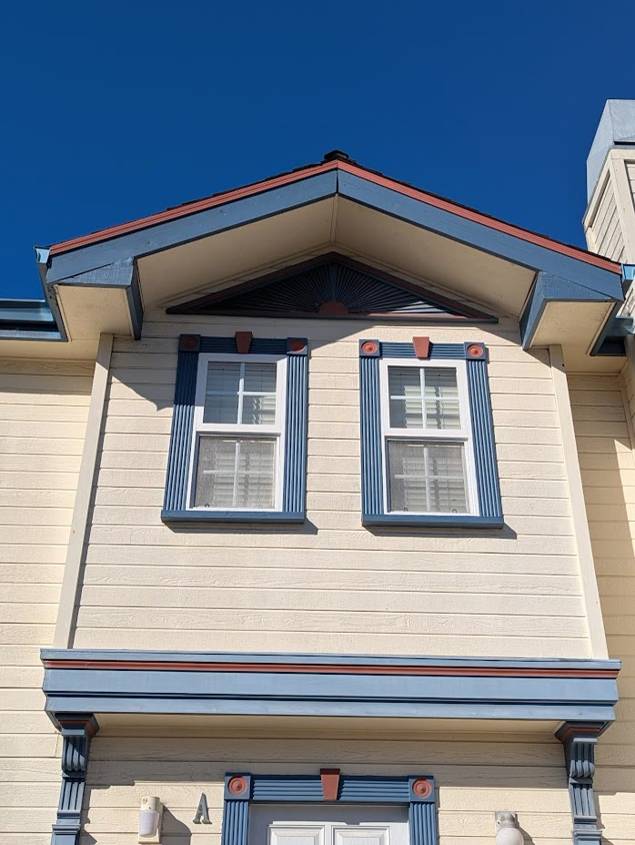
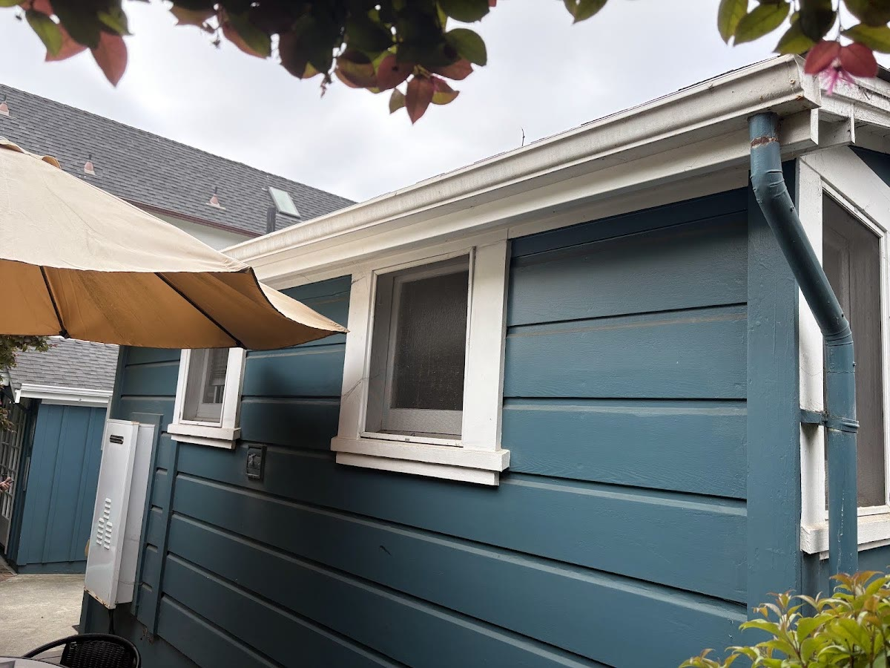
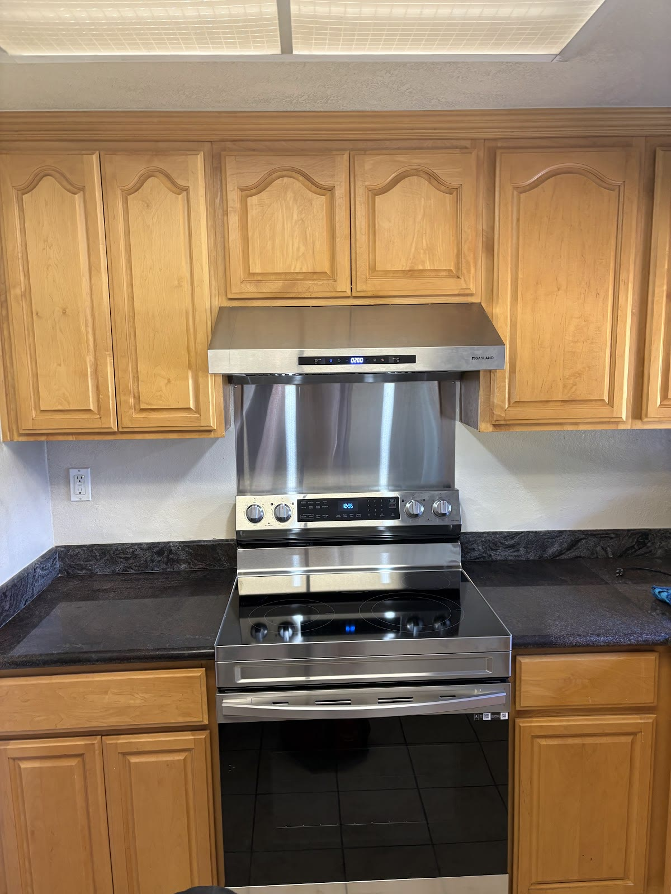
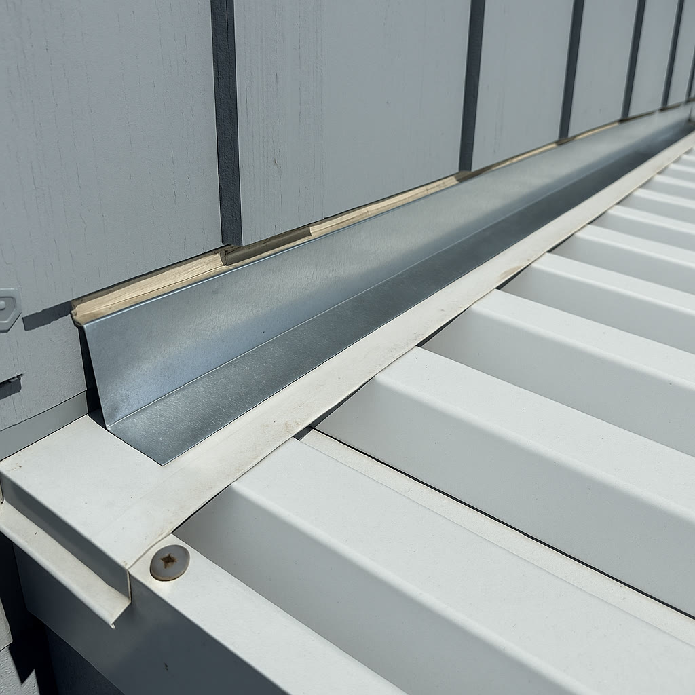

Repairs
Serving the South Bay & Monterey Bay
Solid work.
Straight answers.
Dependable repairs, exterior carpentry, and small construction projects—handled with clear communication and built to last.
- Free estimates
- Clear, written scope
- Residential project work

What we handle
Focused construction and repair work, handled start to finish.
Big Iron handles defined residential scopes with clear communication, practical planning, and careful execution—from exterior repairs to carpentry and small builds.
Carpentry
Deck boards, railings, exterior woodwork, framing corrections, and finish carpentry.
Project closeout
Coordinated repair lists, finish items, and final details completed in one organized scope.
Small builds
Steps, platforms, small exterior structures, and practical improvements built for long-term use.
Service areas
Primary cities and nearby service areas.
Big Iron serves homeowners across San Jose, Santa Cruz, Monterey, Salinas, and Morgan Hill for repair, carpentry, and exterior construction work.
San Jose
Deck and fence repair, exterior carpentry, and residential improvements across San Jose.
Morgan Hill
Residential repairs, trim work, and practical exterior carpentry for Morgan Hill homes.
Santa Cruz
Coastal repair work for siding, deck boards, gates, gutters, and exterior problem areas.
Salinas
Exterior repairs and homeowner punch-list work for Salinas properties that need steady follow-through.
Monterey
Fence and deck repair, exterior carpentry, and weather-exposed construction work in Monterey.
Also serving
Sunnyvale, Los Gatos, Saratoga, Campbell
Aptos, Capitola, Scotts Valley, Felton
Watsonville, Gilroy, Hollister, Prunedale, Aromas
Seaside, Pacific Grove
Recent Jobs
The work—and the people behind it.
Finished projects, repair details, and a few honest looks at the crew getting the work done.






How we work
A professional process from first look to final walkthrough.
Every project starts with a clear understanding of the scope and ends with the work reviewed together.
01 · Review
Share the project details, photos, location, and timing.
02 · Scope
Confirm the work, materials, access requirements, and next steps.
03 · Build
Complete the work with direct updates and respect for the property.
04 · Walkthrough
Review the completed scope and close out the final details.
Free homeowner resource
Get the repair out of your head and into one clear brief.
Use Big Iron's no-email project-prep page to organize what you can observe, the photos to take, questions for written quotes, and the final walkthrough—without pretending a checklist can diagnose the work.
Describe
Record the location and visible condition in plain language.
Photograph
Capture wide context, medium views, close-ups, and safe access.
Compare
Put written scope, exclusions, timing, changes, and closeout into the same fields.
Ready when you are